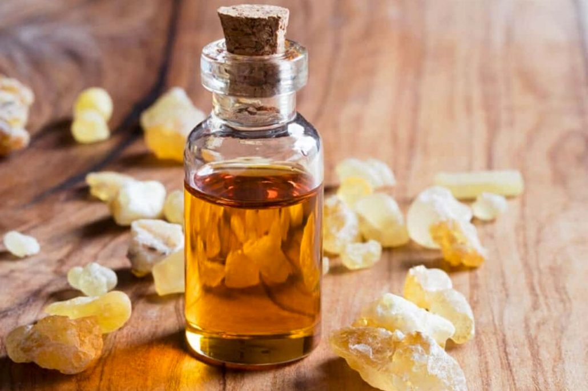
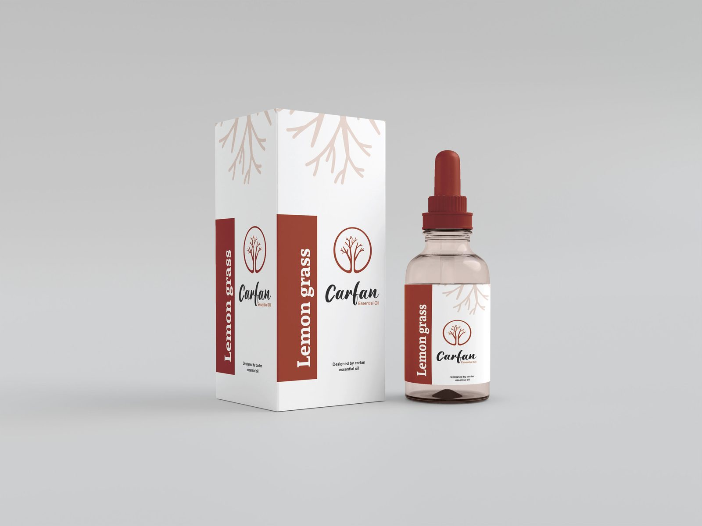

The tree
Frankincense resin is the thread through the workshop. Oil is distilled from it. Creams, soaps, and shampoo are infused with it.
Soo dhawoow · Jigjiga, Ethiopia
Carfan manufactures oils, creams, soaps, and shampoo in Jigjiga. Resin is bought from the people who tap the trees, finished on our bench, and packed under one mark.

The tree is the ingredient. The circle is the whole range.
Colors taken from frankincense itself — resin, bark, and the gold of a fresh tear.
The icon is the frankincense tree, the ingredient at the center of Carfan. The circle means we are not a single product.
The mark
Frankincense resin is the thread through the workshop. Oil is distilled from it. Creams, soaps, and shampoo are infused with it.
The ring around the tree is the promise of inclusion. Oils, creams, soaps, and shampoo sit together so different people, and different days, have a Carfan essential that fits.
The groves are in the dry country of the Somali Region. The still, the bench, and the packing table are in Jigjiga, so the work ends where the community lives.
The range
Every pack is white, marked with the tree, and given a spine in resin, gold, or bark so you can tell the family at a glance.
Frankincense, lemongrass, and a warm evening blend. Dropper and amber bottle, 30 ml.
Resin spineA light face cream and a richer body cream, both carrying a frankincense infusion.
Gold spineBars poured, cut, and cured in Jigjiga. A resin bar and a honey resin bar.
Bark spineA daily wash and a softer rinse. The same tree, in a bottle made for the shower.
Resin pumpThe path
Price and rest agreed with harvester families before the first cut.
Shallow cuts. The tree weeps. Tears are gathered by hand.
Dried in the shade and brought into Jigjiga clean of bark and dust.
Pale tears for the still. Deeper pieces for cream, soap, and shampoo.
Steam draws the oil. Other grades are warmed into infusions.
Small batches. Jars, bars, and bottles filled on the same bench.
White label, colored spine, tree in the circle. Then it leaves.

Community
Buying is direct. Young tappers learn beside people who already know the groves. Packing stays in Jigjiga. At the close of a season, soap and school kits go to families around the workshop.
How we stand with peopleThe official pack
Lemongrass is the oil drawn in the brand book. Frankincense, the creams, the soaps, and the shampoo use the same bones, with a spine color for each family.

Ask for an oil, a cream, a soap, or a shampoo, or come by when a batch is being packed. We answer on +251 910 778 002.